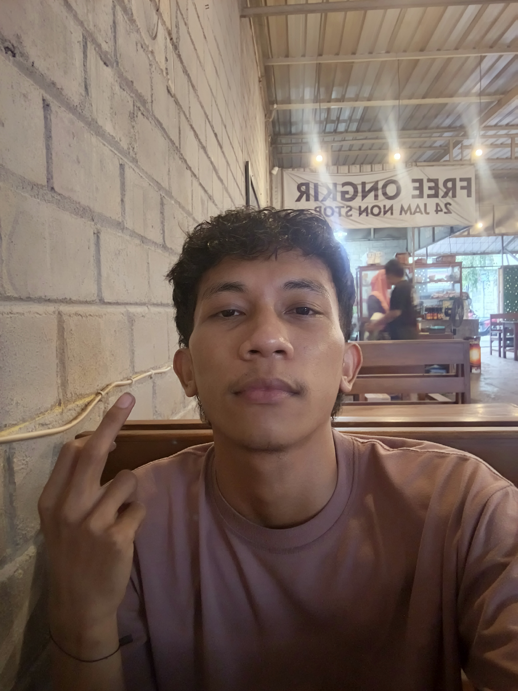

SUGENG RAWUH
Halo, saya Zidan Putra
Selamat datang di ruang digital saya. Tempat berbagi cerita, karya, foto, dan inspirasi.

Tentang Saya
Saya suka menjelajahi hal baru, menikmati keindahan alam, belajar teknologi, dan mengembangkan kreativitas digital. Website ini menjadi tempat untuk menyimpan dan membagikan cerita serta karya saya.
01Profil
02Galeri
03Kontak
Galeri Saya
Beberapa gambar untuk menghiasi halaman pribadi.


Punya pesan untuk saya?
Klik tombol di bawah untuk menghubungi saya.
Chat melalui WhatsApp ↗